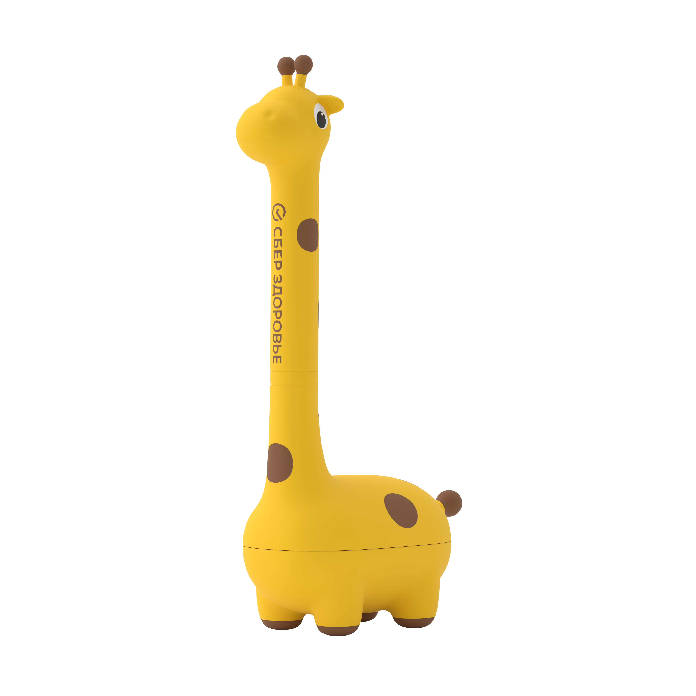
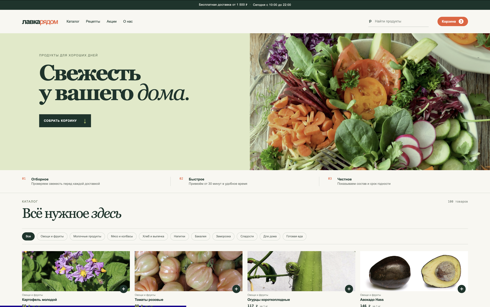
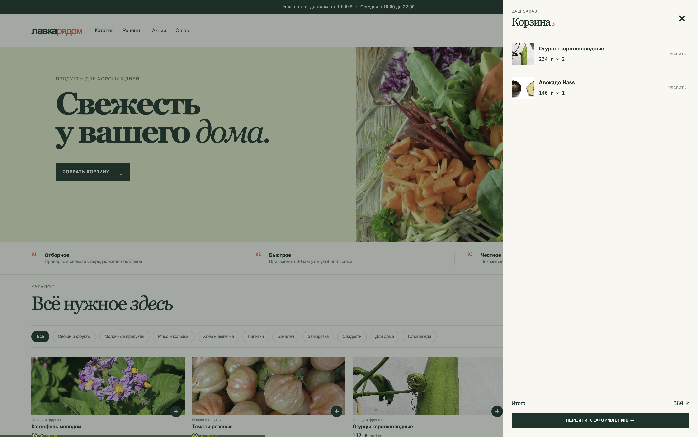
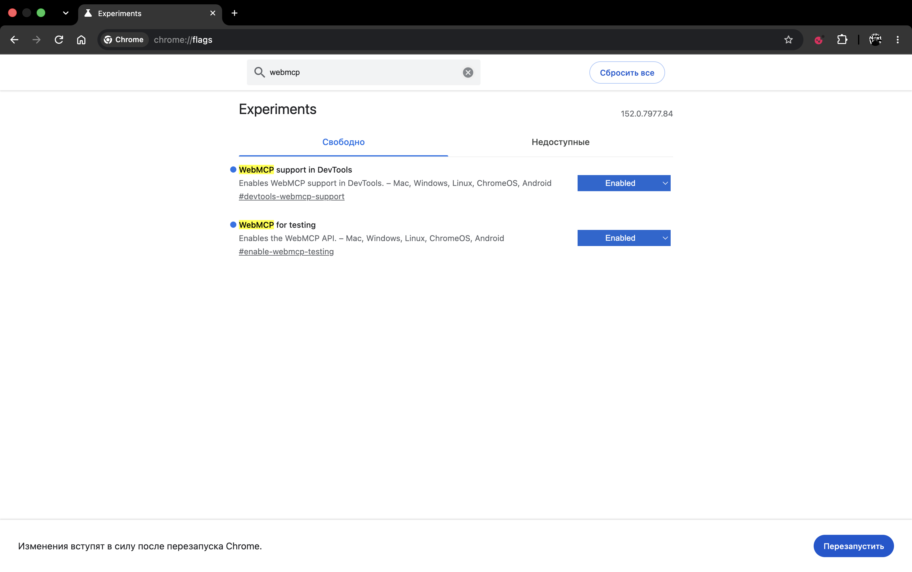
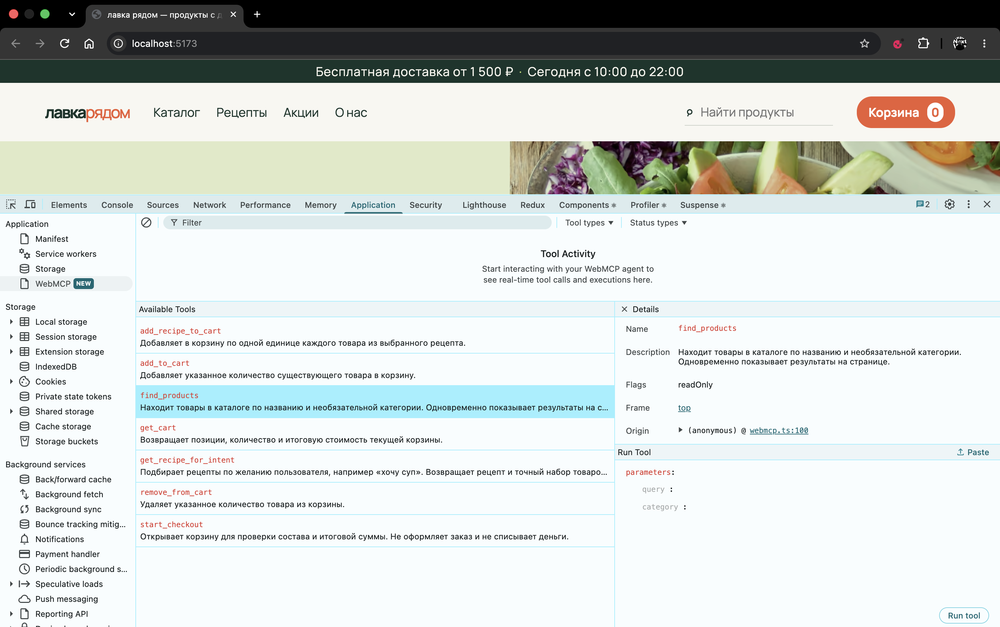

typeпринимаем только объект
Web Model Context Protocol
Интерфейс для
нового пользователя
Что меняется во фронтенде,
когда сайт использует AI-агент.

Обо мне
Фронтенд-разработчик
12 лет фронтендер
Сейчас в СберЗдоровье
Исследую нативные Web API
Отправная точка
UIобъясняет, что здесь можно сделать и чего ожидать дальше.
До недавнего времени
Мы создавали этот договор для человека.
Семантический HTML
<nav><main><button><form>
Доступность
Комфорт пользователя
→Понятная структура, предсказуемые действия, доступные маршруты.
Смена оптики
02
AI-агент действует от имени человека.
Интерфейс глазами агента
DOM и accessibility tree
buttonроль
«Оформить»имя
?точный контракт действия
Новый запрос к фронтенду
AIнужны названные действия, параметры и ожидаемый результат.
Главная мысль
Человекусемантика
и доступность
АгентуWebMCP
Мы повышаем комфорт агента тем же способом: добавляем смысл.
Определение спецификации
WebMCP позволяет веб-приложению отдавать JavaScript-инструменты AI-агентам.


Готовый контур
GET /api/products+fetch(query)→products[]
Шаг 01 / 06 · Код
Пока никакого WebMCP.
export async function searchProducts(
{ query, limit = 10 },
{ signal } = {}
) {
const url = new URL("/api/products", location.origin);
url.searchParams.set("query", query);
url.searchParams.set("limit", limit);
const response = await fetch(url, { signal });
if (!response.ok) throw new Error("Search failed");
return response.json();
}Шаг 01 / 06 · Разбор
UI↘
searchProducts() → GET /api/products
WebMCP↗
Как в доступности: мы не строим второй продукт, а даём ещё один способ дойти до того же действия.
Шаг 02 / 06 · Код
Агент читает контракт до вызова.
const searchProductsMetadata = {
name: "search_products",
title: "Поиск товаров",
description:
"Найти товары по текстовому запросу."
};Шаг 02 / 06 · Разбор
nameстабильный ID действия
titleподпись для интерфейса браузера
descriptionкогда этот tool уместен


Шаг 03 / 06 · Код
JSON Schema вместо догадок.
const searchProductsInput = {
type: "object",
properties: {
query: {
type: "string",
minLength: 2,
maxLength: 80
},
limit: {
type: "integer",
minimum: 1,
maximum: 20
}
},
required: ["query"],
additionalProperties: false
};Шаг 03 / 06 · Разбор
typeпринимаем только объект
requiredбез query вызов невалиден
min / maxфиксируем границы
additionalлишние данные запрещены
Шаг 04 / 06 · Код
Контракт встречается с логикой.
import { searchProducts } from "./products-api.js";
export const searchProductsTool = {
...searchProductsMetadata,
inputSchema: searchProductsInput,
annotations: {
readOnlyHint: true
},
execute: ({ query, limit }, { signal }) =>
searchProducts({ query, limit }, { signal })
};Шаг 04 / 06 · Разбор
execute —Он не копирует поиск. Он передаёт вход и отмену в уже существующую функцию.
execute(input, options)
Шаг 05 / 06 · Код
Обычный модуль существующего фронтенда.
import { searchProductsTool } from "./search-products-tool.js";
if ("modelContext" in document) {
await document.modelContext.registerTool(
searchProductsTool
);
}Шаг 05 / 06 · Разбор
document.modelContext
После регистрации агент видит имя, описание и схему. UI продолжает работать как раньше.
Шаг 06 / 06 · Разбор
цель→search_products→searchProducts()→API→products[]
На этом всё